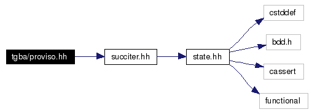

proviso.hh File Reference
#include "succiter.hh"
Include dependency graph for proviso.hh:

Go to the source code of this file.
|
Namespaces |
| namespace | spot |
Please comment this page and report errors about it on
the RefDocComments page.
Generated on Wed Mar 1 11:24:04 2006 for spot by  1.4.0
1.4.0